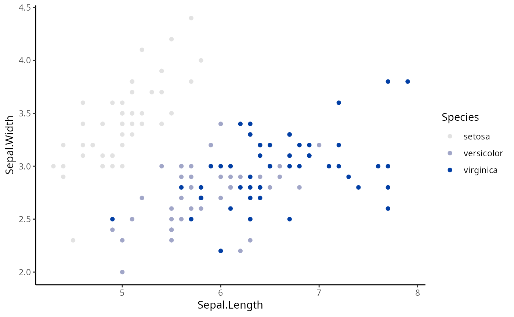
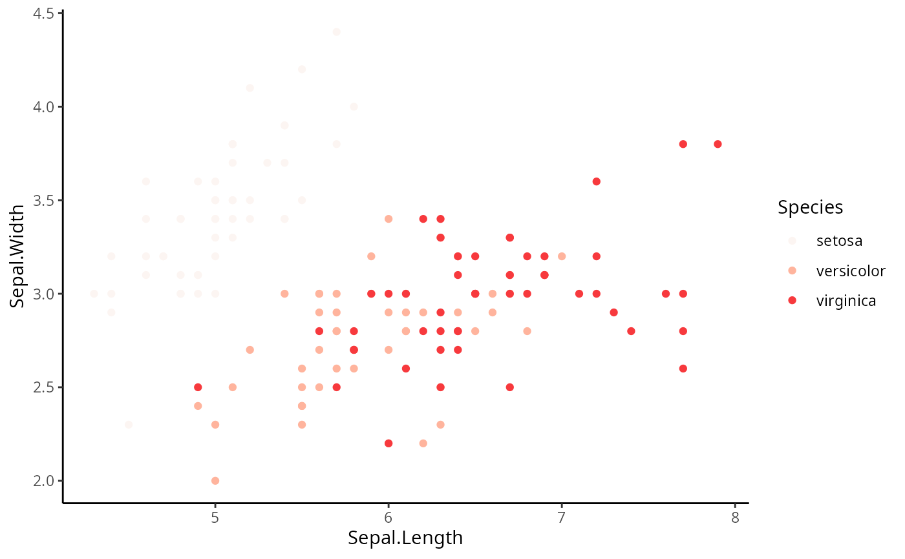
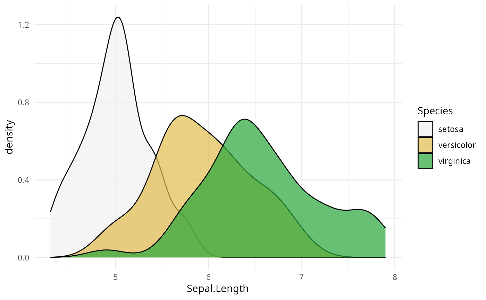

scale_colour_discrete_sequential.RdDiscrete ggplot2 color scales using the color palettes generated by sequential_hcl.
scale_colour_discrete_sequential(
palette = NULL,
c1 = NULL,
c2 = NULL,
cmax = NULL,
l1 = NULL,
l2 = NULL,
h1 = NULL,
h2 = NULL,
p1 = NULL,
p2 = NULL,
alpha = 1,
rev = TRUE,
nmax = NULL,
order = NULL,
aesthetics = "colour",
...
)
scale_color_discrete_sequential(
palette = NULL,
c1 = NULL,
c2 = NULL,
cmax = NULL,
l1 = NULL,
l2 = NULL,
h1 = NULL,
h2 = NULL,
p1 = NULL,
p2 = NULL,
alpha = 1,
rev = TRUE,
nmax = NULL,
order = NULL,
aesthetics = "colour",
...
)
scale_fill_discrete_sequential(..., aesthetics = "fill")The name of the palette to be used. Run hcl_palettes(type = "sequential") for available options.
Beginning chroma value.
Ending chroma value.
Maximum chroma value.
Beginning luminance value.
Ending luminance value.
Beginning hue value.
Ending hue value. If set to NA, generates a single-hue scale.
Control parameter determining how chroma should vary (1 = linear, 2 = quadratic, etc.).
Control parameter determining how luminance should vary (1 = linear, 2 = quadratic, etc.).
Numeric vector of values in the range [0, 1] for alpha transparency channel (0 means transparent and 1 means opaque).
If TRUE (default), reverses the order of the colors in the color scale (compared to sequential_hcl).
Maximum number of different colors the palette should contain. If not provided, is calculated automatically from the data.
Numeric vector listing the order in which the colors should be used. Default is 1:nmax.
The ggplot2 aesthetics to which this scale should be applied.
common discrete scale parameters: name, breaks, labels, na.value, limits and guide. See
discrete_scale for more details.
If both a valid palette name and palette parameters are provided then the provided palette parameters overwrite the parameters in the named palette. This enables easy customization of named palettes.
Compared to sequential_hcl the ordering of the colors in the sequential ggplot2 scale
are reversed by default (i.e., rev = TRUE) to be more consistent with ggplot2's own scales such as
scale_color_brewer. For most named palettes this leads to darker and more
colorful colors for larger values on the scale. This is typically the better default on light/white
backgrounds.
library("ggplot2")
# default colors
ggplot(iris, aes(Sepal.Length, Sepal.Width, color = Species)) +
geom_point() + scale_color_discrete_sequential() + theme_classic()

# customization of named palette
ggplot(iris, aes(Sepal.Length, Sepal.Width, color = Species)) +
geom_point() + scale_colour_discrete_sequential(palette = "Reds", nmax = 4, p2 = 1.5) +
theme_classic()

# color scale "Terrain"
ggplot(iris, aes(Sepal.Length, fill = Species)) +
geom_density(alpha = 0.7) + scale_fill_discrete_sequential(palette = "Terrain") + theme_minimal()
